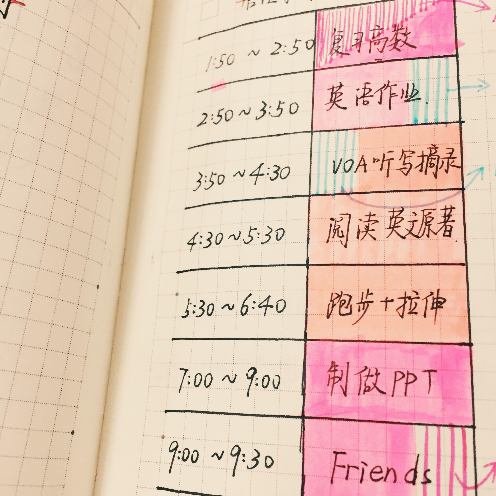

经济统计学专业介绍
主讲人：何志锋
统计学重要性
原北京大学校长 马寅初
学者不能离开统计而研究；
政治家不能离开统计而施政；
企业家不能离开统计而执业。
华为主要创始人兼总裁 任正非
人工智能就是统计学，计算机与统计学就是人工智能，但中国目前在在数学中的统计学等基础学科上的重视不够。只有重视基础学科的发展，才能带动新时代的突破。
特斯拉创始人 马斯克
经济统计学是什么？
经济统计学专业是一门将统计学的理论和方法应用于经济领域的学科，它可以帮助你掌握经济数据的收集、处理、分析和预测的能力，为经济决策和管理提供科学依据。
经济统计学专业是一门既有理论深度又有实践广度的专业，它可以让你在学习中不断提高你的逻辑思维、数据分析、问题解决和创新能力，也可以让你在就业中有很多选择和机会，适应不同的工作环境和岗位需求。
广东金融学院统计学专业设立于2007年
大学四年将要学到什么？
通识课
科学基础必修课
专业必修课
专业选修课
通识课
通识必修课的学分必须全部获得，如考试不合格则补考，补考不合格则重修。
通识选修课自主选择，修满要求学分即可，考察不合格可以另选课程补学分。
数学、英语和计算机类通识必修课非常重要。
学科基础必修课
学科基础必修课的学分必须全部获得，如考试不合格则补考，补考不合格则重修。
学科基础必修课多由外学院老师负责。
专业必修课
专业必修课的学分必须全部获得，如考试不合格则补考，补考不合格则重修。
专业必修课由本专业老师负责。
专业选修课
专业必修课的学分需修满，如考试不合格直接重修。
专业选修课由本专业老师负责。
专业教师
| 姓名 | 学历 | 主要课程 |
|---|---|---|
| 何志锋 | 暨南大学统计学博士 | 多元统计分析、非参数统计、SPSS软件 |
| 汪志红 | 暨南大学统计学博士 | EXCEL统计分析、时间序列分析 |
| 蔡火娣 | 暨南大学统计学博士 | 计量经济学、STATA软件 |
| 邓炳茂 | 华南理工大学数学博士 | 概率论与数理统计、随机过程 |
| 常曦 | 澳门科技大学管理学博士 | 抽样调查、经济预测与决策 |
| 魏守道 | 暨南大学经济学博士 | 金融统计学、市场调查分析 |
| 李毅君 | 西北大学数学博士 | 经济统计学 |
| 李东行 | 汕头大学数学博士 | 线性代数 |
| 马佳羽 | 暨南大学统计学博士 | 数据数据挖掘、机器学习 |
| 屈文鑫 | 暨南大学统计学博士 | 人口统计学 |
| 李舒霏 | 南方科技大学统计学博士 | 统计软件编程 |
| 洪娜眉 | 澳门科技大学经济学博士 | 国民经济核算 |
| 刘家生 | 硕士 | 投入产出分析 |
| 赵倩 | 硕士 | 数据可视化艺术 |
就业前景
经济统计学专业的就业前景与国家经济的发展和数据分析的需求密切相关，随着经济的快速发展和大数据的广泛应用，经济统计学专业的就业前景将会越来越好。经济统计学专业的毕业生在就业市场上有着广阔的发展空间，无论是从事数据科学、市场调研、金融分析，还是从事社会科学研究，统计学专业的人才都将受到欢迎。
- 金融部门：银行、保险公司、证券公司等
- 事业单位：政府部门（统计局等公务员）或在科研、教育部门从事研究和教学工作。
- 企业单位：市场调查公司、咨询公司、各公司的市场研究部门、工业企业的质量检测部门等
- 继续深造：可以选择境内考研或申请出国深造
赴西南财经大学交流项目
经济统计学专业每年有两个西财交流生名额，大三一年学业在西财完成。目前还有金融学、会计学和保险学专业有交流生指标。
交流生名额由学生大一、大二前三个学期平均绩点排名决定。
专业技能培养
数学建模竞赛
全国大学生数学建模竞赛（国赛\美赛）、大湾区粤港澳金融数学建模竞赛等
数据挖掘竞赛
Kaggle、阿里天池、泰迪杯等平台上的各种数据分析挖掘竞赛、“大湾区杯”粤港澳金融数学建模竞赛、全国大学生数据挖掘竞赛
市场调查分析竞赛
全国大学生市场调查分析竞赛、全国大学生数据分析实践赛
设计竞赛
全国大学生统计建模竞赛、 全国大学生统计方案设计竞赛
怎样学好统计学
建立数学基础。
掌握一些基本的数学知识，比如代数、微积分、概率论、线性代数等，这些知识是统计学和机器学习的基础，也是理解和应用它们的前提。
了解统计学的基本概念和原理。
了解统计学的一些基本概念，比如数据的类型、描述性统计、抽样与分布、假设检验、置信区间、回归分析、方差分析等，这些概念是统计学的核心，也是机器学习的基础。
掌握机器学习的常用方法和技巧。
掌握一些机器学习的常用方法和技巧，比如监督学习、无监督学习、半监督学习、强化学习、分类、回归、聚类、降维、特征选择、模型评估、模型选择、模型优化等，这些方法和技巧是机器学习的实践，也是解决实际问题的工具。
学习特征工程，打比赛。
学习一些特征工程的方法和技巧，比如数据清洗、数据转换、数据编码、数据标准化、数据归一化、数据离散化、数据降噪、数据增强、数据平衡等，这些方法和技巧是提高机器学习效果的关键，也是参加数据分析和机器学习比赛的必备。
给自己大学生活提点要求
- 不要因为缺乏自信心而选择“躺平”
- 不要因为上课没听懂而不去与老师交流
- 不要为逃课和抄袭作业给自己找理由
- 不要觉得大学挂科是一件正常的事
- 不要将学习目标局限于教材和课堂内容
- 不要等到毕业季节才发现没掌握专业技能
规划好大学四年
- 学好专业知识
- 至少精通一门统计软件和计算语言
- 获得英语4级或6级证书
- 参加一次学科竞赛并获奖
- 申请或参与一项课外科研项目
- 获得一个资格证书
- 做好毕业论文
- 为就业与继续深造做好规划

大一开始能自学些什么？
MarkDown
Latex
HTML, CSS
R, Python基本操作
浏览专业论坛和公众号
什么是Markdown？
Markdown是一种轻量级标记语言，用于使用简洁的语法快速编写格式化文本。
Markdown 以其简洁、易读、易学的特性，广泛应用于各种创作场景，尤其在编写技术文档、博客文章和笔记整理方面表现突出。它的轻量级和跨平台特性让用户无需复杂的编辑器即可完成高效创作。它能干什么？
个性化的写作
多样化的学习笔记
构建思维导图
渲染为不同格式文件
创建网页、发布博客
跨平台分享信息


学习和使用Markdown
国内支持使用Markdown的主要平台包括知乎、语雀、蚂蚁笔记和简书等，国外最大开源项目的托管平台Github使用Markdown创造网页。
语雀文档是一个给个人和团队提供的写好文档的工具，每个人都可以快速、舒适的记录自己的所思所想.
- 支持多人协同：语雀文档支持多人同时编辑一篇文档。
- 丰富的文本样式：支持 粗体、斜体、下划线、
删除线、上标、下标、代码、高亮颜色等文本样式 - 丰富的插入方式：支持插入图片、表格、画板、公式、代码、思维导图、流程图、本地文件、高亮块、分栏、折叠块等内容。
学会使用云端笔记
国内的很多云端笔平台支持使用Markdown，包括幕布等。
幕布软件（Mubu）是一款在线文档编辑和协作工具，可以将笔记形式思维导图，帮助我们积累和梳理学习过的知识。
在线文档编辑：支持多种格式（如文本、图片、表格等）的文档编辑，可以实时保存和同步。
协作功能：多人实时协作，可以与团队成员共享文档，进行实时编辑和评论。
模板和样式：提供丰富的模板和样式，帮助用户快速创建专业的文档。
导出和导入：支持导出为PDF、Word等格式，也可以导入其他文档格式。
云存储：文档保存在云端，可以随时随地访问和编辑。
什么是Latex？
LaTeX是一种用于排版和文档编写的系统，尤其擅长处理复杂的数学公式、学术论文和技术文档。
很多在线Latex编辑器不用下载也能使用Latex写作，方便入门学习，例如Overleaf和TeXPage。等
公式排版：可以轻松编写复杂的数学表达式、矩阵、积分、微分方程等。
引文和参考文献管理：使用工具如BibTeX或BibLaTe，可以轻松管理和格式化引用。
高质量的排版：处理长篇文档、图表、表格和图像时表现出色，自动调整段落、章节、脚注、目录等，使文档外观专业且一致。
广泛的模板支持：LaTeX提供了丰富的模板，包括论文、书籍、简历、报告、幻灯片等。

学会使用公式编辑器
国内有很多在线Latex公式编辑器，例如LaTeX公式编辑器等。如果在word中则需要使用Mathtype。
排版复杂公式：LaTeX可以精准地排版复杂的数学公式，比普通的文本编辑器更适合数学、物理、工程等领域的学术写作。
专业外观：LaTeX生成的公式具有专业的外观，一致的格式，使文档看起来更加规范和专业。
跨平台兼容：LaTeX公式可以在不同的平台和设备上保持一致的显示效果，不会因为软件或设备的不同而影响排版。
支持多种符号：LaTeX包含丰富的数学符号库，可以方便地表示各种数学符号和运算符。
学会HTML和CSS基础，创建一个简单网页
HTML定义网页的内容和结构，而CSS定义其外观和布局。两者结合使用，使得网页既有内容又有美观的设计。可以在w3schools中线上学习。
HTML是用于创建网页和Web应用程序的标准标记语言。它提供了网页的基本结构。通过使用标签（如<h1>, <p>, <div>等），HTML定义了网页的各个部分，例如标题、段落、图像、链接等。
学会如何演示观点成果
演示成果(presentation)是指以结构化和视觉化的方式展示信息、想法或成果的过程。通常用于学术、商业或教育等场合，目的是向观众传达特定的信息或观点。
演示成果通常通过幻灯片的方式展示，常用的例如PPT,Beamer,Revealjs等
PPT：Office的一部分，操作简便、功能强大，适合大多数商业和教育用途。
Beamer：基于LaTeX的演示文档，排版精美、适合学术和技术场合。
Revealjs：基于HTML的开源演示框架，网络友好、动态效果强，适合在线展示和技术演示。
一些统计专业论坛
一些扩展专业知识的公众号
如何做好职业生涯规划
了解自己，明确兴趣和优势
设定短期和长期目标
选择适合的专业和课程
积极学科竞赛和社会实践
加强职业技能和资格证书的准备
持续学习和自我提升
灵活调整规划
了解自己，明确兴趣和优势
自我评估：通过自我评估工具，了解自己的兴趣、性格特点、技能和价值观。这有助于明确个人的优势和潜在的职业方向。
兴趣探索：关注自己在学习过程中对哪些学科感兴趣，以及在课外活动中喜欢参与哪些类型的工作或项目。兴趣通常是选择职业的重要因素。
设立学习和实践目标：可以为自己设立一些短期目标。通过这些小目标的实践，观察自己在完成任务时的感受和表现，从中逐步了解自己的兴趣和优势。
参与学术活动：可以通过参加学术讲座、研讨会、实验室项目等活动，加深对经济统计学不同领域的了解，观察自己对哪个方向有更大的兴趣。
设定短期和长期目标
短期幕布：通常是指1年内可以实现的目标，这些目标帮助学生在大学早期阶段积累基础知识、技能和经验。
- 学习目标：提高学术成绩、掌握统计软件、完成核心课程
- 实践目标：参与校内外活动、获取实习机会
- 软技能发展目标：提升沟通与写作能力、拓展人脉
长期目标：长期目标通常是指3-5年甚至更长时间内希望达成的目标，主要涉及职业规划、专业深造和个人成长。
职业规划目标：明确职业方向、考取资格证书
深造目标：考研或出国留学、参与科研项目
个人发展目标：建立个人品牌、持续学习
选择适合的学习方向和内容
了解专业和课程
课程大纲：查看每门课程的课程大纲，了解课程内容、学习目标和评价方式。选择那些符合你兴趣和职业目标的课程。
前置课程要求：确保你满足所选课程的前置课程要求。一些高级课程可能需要你先完成某些基础课程。
多样化你的学习
职业规划目标：不要只局限于经济统计学，尝试选修一些其他学科的课程，如计算机科学、心理学或社会学。这些课程可以丰富你的知识体系，增强你的竞争力。
参加实习或实践课程，这些课程通常提供实际操作的机会，帮助你将理论应用于实践。
积极学科竞赛和社会实践
参加学科竞赛
- 选择合适的竞赛：根据自己的兴趣和特长选择合适的竞赛项目，先尝试参加一些校内或区域性的竞赛，积累经验后再挑战全国性赛事。
积极参与、组建团队：找到志同道合的同学，组成一个互补的团队，共同备赛。在竞赛过程中保持积极的态度，勇于尝试和创新，尽最大努力发挥团队的实力。
充分准备：掌握竞赛所需的知识和技能，积极参加相关培训或讲座。熟悉竞赛流程和题型，提升应对能力。
参与社会实践
积极参与校园活动：加入学校社团，参与组织各种学术讲座、讨论会和竞赛活动。
利用寒暑假：参加社会实践活动，如实习、调研和志愿服务等，为未来的职业发展积累经验。
记录和反思：在每次实践活动后，记录下自己的收获和感悟，反思改进，以不断提升自己的能力和素质。
建立人脉：在实践活动中，积极结识行业内的专业人士，建立良好的人际关系网，为将来的职业发展打下基础。
加强职业技能和资格证书的准备
技能提升：根据职业目标，学习相关的硬技能（如编程、数据分析、财务管理等）和软技能（如沟通、时间管理、问题解决能力）。
考取相关证书：对于某些行业，如金融、IT、数据分析等，相关资格证书（如CFA、CPA、数据分析师等）是求职中的加分项。学生可以根据职业目标提前准备和考试。
持续学习和自我提升
关注行业动态：通过阅读专业书籍、参加相关领域的讲座和研讨会，了解行业发展趋势和最新动态。特别是在科技和金融等快速变化的行业，持续学习是保持竞争力的关键。
培养终身学习习惯：现代职业要求不断更新和升级技能，因此培养终身学习的习惯非常重要。可以通过在线课程获取新知识和技能。
灵活调整规划
定期反思和自我评估：定期审视自己的兴趣、优势和职业目标，保持开放心态，接受变化和新机会。
参与实习和社会实践：积极寻找实习机会和社会实践活动，积累实际工作经验，增强职业技能和综合素质。
建立多元技能和持续学习：提升软技能和技术技能，保持学习的动力和热情，关注行业动态和趋势，保持竞争力。
欢迎各位同学踊跃提问
大学就是一条奔腾不息的河流，簇拥着青春浪花。